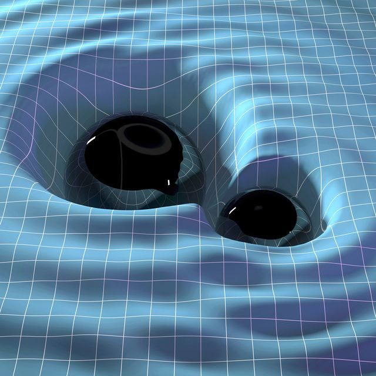

La historia de las Ondas Gravitacionales
La historia de las ondas gravitacionales es interesante ya que su historia se extiende a lo largo de más de un siglo, entrelazando teorías avanzadas de la física con innovaciones tecnológicas sin precedentes. La idea de las ondas gravitacionales se origina en la teoría de la relatividad general de Albert Einstein, propuesta en 1915, que revolucionó nuestra comprensión de la gravedad.
Einstein predice las ondas gravitacionales
En 1916 un año después de formular la teoría general de la relatividad, Albert Einstein predijo la existencia de ondas gravitacionales. Según su teoría, los objetos masivos acelerados, como dos estrellas de neutrones en órbita el uno alrededor del otro, deberían producir ondulaciones en el tejido del espacio-tiempo que se propagan a través del universo a la velocidad de la luz. Sin embargo, Einstein también creía que estas ondas serían tan increíblemente débiles que jamás podrían ser detectadas por los humanos.
Décadas de escepticismo y desarrollo teórico
Durante muchas décadas después de la predicción de Einstein, la existencia de ondas gravitacionales fue objeto de debate, en su momento el propio Einstein fluctuó en su creencia sobre si realmente existían. Pero en la década de 1950 y 1960 que los físicos comenzaron a desarrollar marcos matemáticos más sólidos que confirmaron la posibilidad de su detección. No fue hasta En 1974, que los astrónomos Russell Hulse y Joseph Taylor descubrieron un sistema binario de pulsares que se comportaba exactamente de la manera predicha por la teoría general de la relatividad si las ondas gravitacionales estuvieran llevándose energía del sistema. Este descubrimiento les valió el Premio Nobel de Física en 1993.
Primera detección directa
El 14 de septiembre de 2015, los detectores LIGO hicieron historia al captar la primera señal directa de ondas gravitacionales, originadas por la fusión de dos agujeros negros a aproximadamente 1.300 millones de años luz de la Tierra. Esta detección confirmó definitivamente la última gran predicción de la teoría general de la relatividad de Einstein y abrió una nueva era en la astronomía, permitiendo a los científicos observar el universo de una manera completamente nueva. El descubrimiento fue anunciado al público en febrero de 2016 y llevó a los líderes del proyecto LIGO a recibir el Premio Nobel de Física en 2017.
Desde entonces, se han detectado muchas otras señales de ondas gravitacionales, proporcionando información invaluable sobre fenómenos cósmicos como fusiones de agujeros negros, estrellas de neutrones y posiblemente otros eventos astronómicos exóticos. La detección de ondas gravitacionales no solo ha confirmado una de las predicciones más fundamentales de la relatividad general, sino que también ha abierto una nueva ventana a los misterios del universo.
Experimento!
Este es un experimento sencillo, este modelo sirve para representar la colisión de dos agujeros negros, las ondas gravitacionales que resultan y la propagación de las ondas a través del espacio-tiempo.

PONTE A PRUEBA